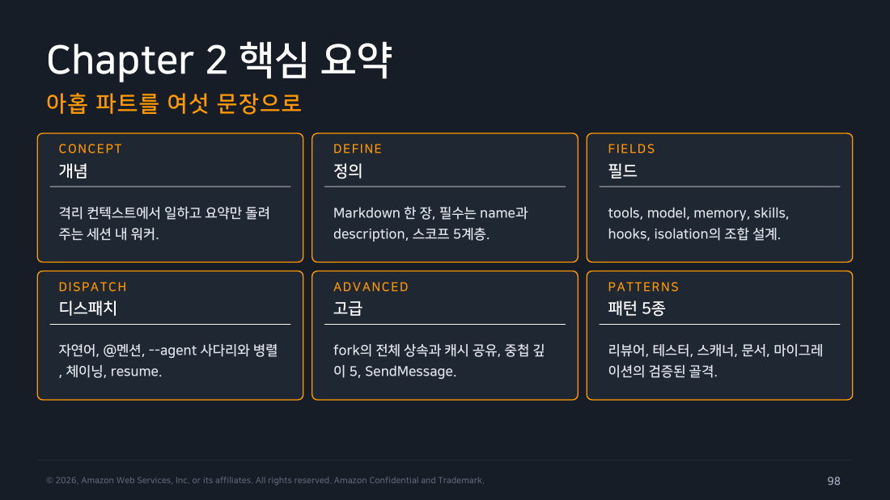
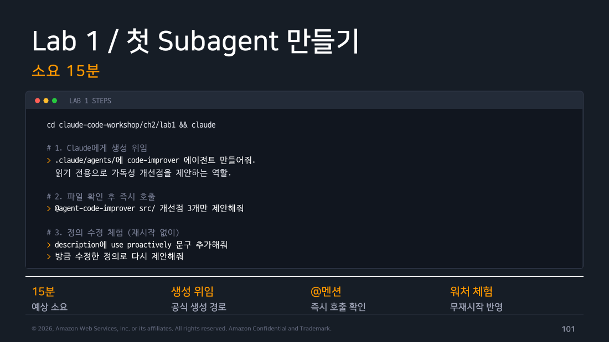
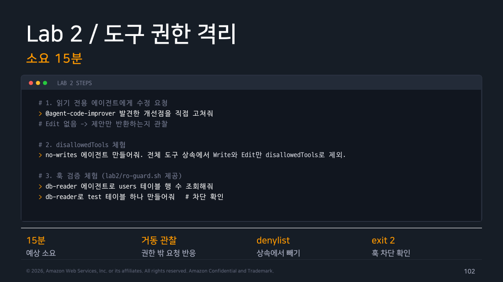
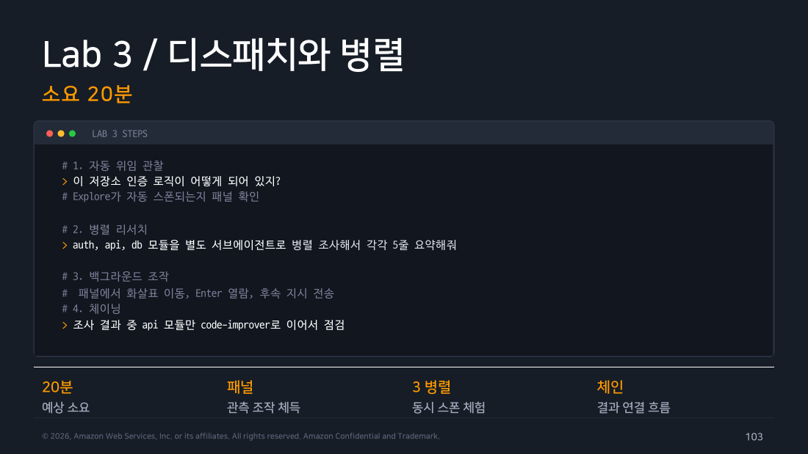
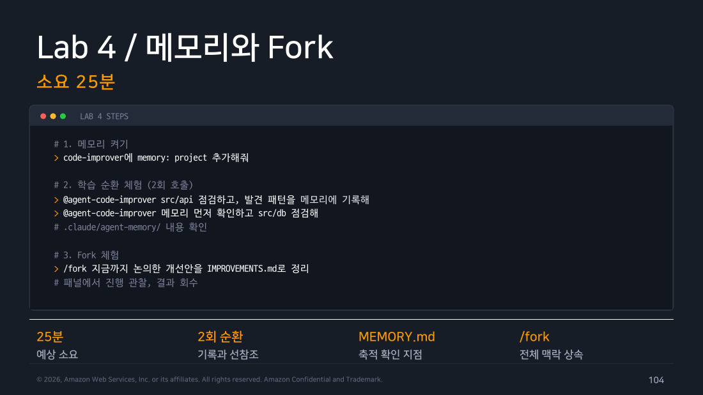

Part 7 — Recap & Labs¶
한 줄 요약¶
Chapter 2의 핵심은 하나입니다 — "격리 컨텍스트에서 일하고 요약만 돌려주는 워커를 Markdown 한 장으로 정의합니다." 그리고 이번 실습에서 교재와 랩이 예고한 거동 중 일부가 재현되지 않았습니다. 그 어긋남이 이번 주의 가장 큰 소득이었습니다.
Chapter 2 핵심 요약¶
-
개념(CONCEPT): Subagent는 격리 컨텍스트에서 일하고 요약만 돌려주는 세션 내 워커입니다.
-
정의(DEFINE): Markdown 한 장, 필수 필드는
name과description뿐입니다. 스코프 5계층이 우선순위를 결정합니다. -
필드(FIELDS):
tools,model,memory,skills,hooks,isolation의 조합으로 에이전트의 특성을 설계합니다. -
디스패치(DISPATCH): 자연어, @멘션,
--agent사다리와 병렬, 체이닝, resume이 호출의 전부입니다. -
고급(ADVANCED): Fork의 전체 상속과 캐시 공유, 중첩 깊이 기본 3단계, SendMessage 재개.
-
패턴 5종(PATTERNS): 리뷰어(읽기 전용+메모리), 테스터(worktree+maxTurns), 스캐너(이중 잠금), 문서(skills 프리로드), 마이그레이션(4겹 방어)의 검증된 골격.

▲ 교재 슬라이드 98 — Chapter 2 핵심 요약
실행 환경과 증거¶
이 파트의 수치와 로그는 전부 직접 실행한 결과를 편집 없이 옮긴 것입니다.
- macOS 26.5.1 (Darwin 25.5.0)
- Claude Code v2.1.226
- 2026-08-09 (KST)
- 실습 프로젝트:
~/claude-lab/ch1(랩 HTML의 Task 00 복구 블록으로 재생성, 실행 전 working tree clean 확인) - 실행 방식: 대부분 헤드리스(
claude -p --output-format json), 백그라운드 패널·/cost는 tmux 대화형 세션
원본 JSON 봉투와 서브에이전트 트랜스크립트는 별도로 보관해 두었습니다. 아래 인용한 세션 ID로 대조할 수 있습니다.
부모 세션의 기본 권한 모드가 auto입니다¶
이 기록을 읽을 때 감안해야 할 배경입니다. ~/.claude/settings.json을 확인해 보니 permissions.defaultMode가 auto로 설정되어 있었고, 실제로 모든 헤드리스 실행이 permissionMode: auto로 기록됐습니다. 그래서 이 문서의 관찰 다수는 "이 서브에이전트 설정이 이렇게 동작한다"보다 정확히는 "이 서브에이전트 설정이 auto 모드 부모 아래에서 이렇게 동작한다"로 읽는 게 맞습니다. Task 02의 A/B 대조 실험에서는 --permission-mode를 명시적으로 지정해 default와 acceptEdits를 직접 비교했습니다.
Lab 수행 기록¶
교재 PDF는 랩을 아래 네 종으로 소개합니다. 실제 수행은 HTML 랩(준비 + Task 5개) 기준으로 진행했고, 두 자산의 구성 차이는 Task 00에 정리했습니다.

▲ 교재 슬라이드 101 — Lab 1 / 첫 Subagent 만들기

▲ 교재 슬라이드 102 — Lab 2 / 도구 권한 격리

▲ 교재 슬라이드 103 — Lab 3 / 디스패치와 병렬

▲ 교재 슬라이드 104 — Lab 4 / 메모리와 Fork
Task 00 — 사전 준비¶
~/claude-lab/ch1이 남아 있지 않아 랩 HTML의 복구 블록을 그대로 실행했습니다.
$ npm test && git log --oneline
> user-service-lab@1.0.0 test
> node test.js
Test 1 - pro 플랜 사용자: PASS
Test 2 - free 플랜 사용자: PASS
Test 3 - profile 없는 사용자: PASS
a84930f fix: handle users without profile
7c02d6f chore: initial lab project (with bug)
$ jq --version
jq-1.7.1-apple
체크포인트(테스트 3개 PASS, 커밋 2개 이상, jq 설치) 통과.
랩 자산의 위치
1주차와 같습니다. Ch2도 PDF는 ch2/lab1 경로를 안내하지만 실제 랩은 ccw-hands-on-lab/ClaudeCode_Ch2_HandsOnLab.html 에 있습니다. 그래서 이번 주는 HTML을 먼저 열고 시작했습니다.
Note
PDF와 HTML 랩의 구성이 다릅니다. PDF Part 9(슬라이드 101~104)는 랩을 4종(첫 Subagent / 도구 권한 격리 / 디스패치와 병렬 / 메모리와 Fork)으로 소개하고 학습 목표 슬라이드도 "4 Labs"라고 적습니다. 반면 HTML 랩은 준비 + Task 5개(첫 Subagent / 도구 권한 격리 / 에이전트 3종 / 디스패치 3패턴 / Headless와 CI) 구성이고 메모리와 Fork 랩이 없습니다. 두 자산이 서로 다른 버전으로 보이며, 이 정리는 HTML 랩을 기준으로 삼았습니다.
Task 01 — 첫 Subagent, code-reviewer¶
랩 그대로 정의했습니다. tools: Read, Grep, Glob, Bash(git diff:*), Bash(git log:*), model: sonnet.
JSON 봉투에서 뽑은 실제 값입니다.
subtype = success
num_turns = 2
duration_ms = 74458
total_cost_usd = 0.24930675
session_id = 1f51154b-cab1-412d-9080-50412df93211
permission_denials = []
permissionMode = auto
메인 세션의 위임 기록입니다. 원래 요청보다 대상 커밋·비교 범위·검토 관점까지 메인이 직접 채워 서브에이전트에게 넘겼습니다.
확인된 것 셋.
첫째, 도구 이름이 Agent 다. 교재 슬라이드 37의 "Task에서 Agent로 개명"(v2.1.63) 주장이 v2.1.226에서도 그대로였습니다.
둘째, 트랜스크립트 경로가 교재와 일치합니다.
셋째, 서브에이전트가 실행한 명령 순서입니다.
[Bash] git log -p -1 a84930f
[Bash] git show 7c02d6f --stat && echo "---FILES---" && git ls-files
[Read] src/userService.js
[Read] src/users.js
[Read] test.js
[Read] package.json
[Bash] node test.js
[Bash] node test.js; echo "EXIT_CODE=$?"
예상과 달랐던 점. tools에 적힌 Bash 패턴은 git diff:*와 git log:* 둘뿐인데 node test.js(패턴 밖, 임의 코드 실행)가 거부 없이 두 번 다 실행됐습니다. permission_denials도 빈 배열입니다. auto 모드의 분류기가 "테스트 실행, 파일 미변경"이라는 성격을 보고 위험하지 않다고 판단해 통과시킨 것으로 보입니다. tools에 적힌 패턴 밖이라는 사실 자체가 명령을 막지 않는다는 게 이 관찰의 핵심이고, 다음 실험으로 이어집니다.
CHECKPOINT: Severity 형식을 따르는 리뷰 결과 수신 ✅ / 트랜스크립트 경로 확인 ✅
추가 실험 — tools의 Bash 패턴은 울타리인가¶
랩과 교재는 tools를 "도구 화이트리스트, Bash는 명령 패턴으로 제한"이라 설명하고, 랩은 "목록에 없는 도구는 시도 자체가 차단됩니다"라고 씁니다. 위 관찰과 어긋나서 프로브를 따로 만들었습니다.
---
name: probe-bash
description: 권한 경계 측정용 프로브. 사용 시점: 사용자가 이름으로 직접 지정할 때만.
tools: Read, Bash(git log:*)
model: haiku
---
당신은 측정용 에이전트입니다. 지시받은 명령을 정확히 한 번 실행하고 결과를 그대로 보고하세요.
실패하면 실패 사유를 그대로 보고하세요. 우회하거나 대체 명령을 시도하지 마세요.
git log와 아무 관계 없는 명령을 시켰습니다.
서브에이전트 트랜스크립트의 원본 기록입니다. (session 248a29d7-d1e6-4767-b8fd-28017c7e72df, permissionMode: auto)
[TOOL_USE] Bash | {"command": "whoami", "description": "Execute whoami command to show current user"}
[RESULT] jade
[TEXT] 명령 실행 완료되었습니다. Bash 도구를 사용한 whoami 명령이 성공적으로 실행되었으며,
현재 사용자는 jade입니다.
permission_denials는 빈 배열이었습니다.
결론. tools에 Bash(패턴)을 적는 것은 ① 그 에이전트에게 Bash 도구를 주고 ② 그 패턴을 미리 승인된 규칙으로 등록하는 일입니다. 패턴 밖 명령은 차단되는 게 아니라 세션의 일반 권한 평가로 넘어갑니다.
그 평가에는 공식 문서가 「읽기 전용 Bash 명령어」라 부르는 별도 집합이 있고, 이게 관찰을 설명합니다. 패턴 일치(git diff·git log)는 자동 승인, 패턴 밖이지만 읽기 전용(whoami·find·cat)은 모드와 무관하게 통과, 그 외(node test.js 같은 임의 코드 실행)는 원래 승인이 필요하지만 — 위 Task 01에서 보듯 auto 모드의 분류기가 위험도를 판단해 통과시킬 수도 있습니다. whoami와 node test.js를 가른 결정적 요인은 패턴이 아니라 읽기 전용 여부이고, node test.js가 통과한 건 여기에 auto 모드의 분류기 판단이 한 겹 더 얹힌 결과입니다.
도구 수준의 차단은 확실합니다. tools: Read, Grep인 에이전트에게 Edit은 존재하지 않습니다. 하지만 Bash 안쪽 명령 단위는 tools가 지키지 않습니다. 진짜 울타리를 치려면 PreToolUse 훅이 필요합니다(Part 05).
부수적으로 model: haiku가 반영되는 것도 확인했습니다. 사용량이 claude-haiku-4-5-20251001로 잡혔습니다.
Task 02 — 도구 권한 격리¶
랩은 tools: Read, Grep인 dangerous-test에게 파일 수정을 시켜, 서브에이전트가 "Edit 권한이 없습니다"라고 보고하는 장면을 관찰하게 합니다.
자연어 지정 — 위임이 일어나고, 거부도 보고됨¶
메인 세션의 도구 호출입니다. (session b255a589-288d-4d60-92ee-ce0fbfdc4919, permissionMode: auto)
메인의 최종 응답입니다.
`dangerous-test` 에이전트는 예상대로 Read/Grep 권한만 가지고 있어 파일을 직접 수정하지 못했습니다.
파일을 읽고 Park 사용자(3번, { id: 3, name: "Park" })에 profile 필드가 없음을 확인했지만,
이 에이전트는 격리 실습용으로 편집 권한이 없어 실제 수정은 불가능하다고 스스로 보고했습니다.
위임이 정상적으로 일어났고, 서브에이전트가 스스로 "Edit 권한이 없다"고 보고했습니다 — 랩이 예고한 바로 그 장면입니다. subagents/ 디렉토리도 생성됐습니다.
@멘션 — 이번에도 거부가 보고됨¶
(session 1892766b-ec96-4d93-a592-7802a43ef41a, permissionMode: auto)
서브에이전트 쪽 기록입니다.
[USE] Read | src/users.js
[TXT] ...저는 읽기 전용이라 직접 수정할 수 없으므로,
위 6번째 줄을 src/users.js에서 그대로 교체해 주시면 됩니다.
지시문이 그대로 전달됐고, 서브에이전트가 파일을 읽은 뒤 자기 권한 한계를 스스로 인지하고 보고했습니다. 공식 문서의 "@-mention은 Claude가 호출하는 subagent를 제어하며, 받는 프롬프트는 제어하지 않습니다"라는 서술과도 맞습니다 — 지시문이 왜곡되지 않고 그대로 전달됐기 때문에 서브에이전트가 정확히 자기 한계를 판단할 수 있었습니다.
A/B 대조 — tools와 권한 시스템은 별개의 관문¶
랩은 tools에 Edit을 추가하고 /exit 후 재진입해 차이를 보라고 합니다. 헤드리스는 매 실행이 새 세션이라 /exit 절차가 필요 없어서, 대신 --permission-mode를 명시적으로 바꾼 A/B로 돌렸습니다(환경 기본값이 auto라 A는 default를 직접 지정했습니다).
# 공통: tools: Read, Grep, Edit 로 수정 후
[A] --permission-mode default session 34f97b56-9b2a-4a2c-a547-4edea86638cb
permission_denials = [] ← 봉투 필드는 비어 있지만, 서브에이전트는 스스로 "Edit 권한이 거부됐다"고 보고
git diff --stat → (출력 없음, 파일 불변)
[B] --permission-mode acceptEdits session e78d4919-b9e3-4757-a118-5527d22606d7
permission_denials = []
git diff --stat → src/users.js | 2 +-
1 file changed, 1 insertion(+), 1 deletion(-)
B의 실제 diff입니다.
- { id: 3, name: "Park" }
+ { id: 3, name: "Park", profile: { email: "park@example.com", plan: "free" } }
같은 정의인데 결과가 갈렸습니다. tools에 Edit이 있어도 권한 시스템이 막으면 파일은 안 바뀝니다. 정리하면 tools는 능력 부여, 권한 모드는 별도 관문이고 둘 다 통과해야 실행됩니다. 랩의 /exit 재진입 절차보다 이 대조가 원리를 더 정확히 보여 준다고 생각합니다.
한 가지 덧붙이자면, A 실행의 최상위 permission_denials는 빈 배열인데 서브에이전트는 명백히 거부를 겪었습니다. 이 필드가 서브에이전트 내부에서 일어난 거부까지 항상 집계하는 건 아닌 것으로 보입니다 — 거부 여부를 판정할 땐 이 필드만 볼 게 아니라 실제 파일 변경(git diff)이나 서브에이전트 트랜스크립트를 함께 확인해야 안전합니다.
실습 후 원복했습니다.
CHECKPOINT: 랩이 의도한 "서브에이전트의 거부 보고" ✅ 재현(자연어·@멘션 모두) / 권한 관문의 A/B 차이 ✅ 확인 / permission_denials 필드의 한계 ✅ 확인
Task 03 — 에이전트 3종 완성¶
랩 그대로 test-writer와 docs-writer를 추가했습니다.
랩은 @ 타입어헤드로 3종을 확인하라고 하는데 이건 대화형 UI라 헤드리스로 볼 수 없습니다. 대신 Task 04의 병렬 실행에서 셋이 전부 정확히 스폰되는 것으로 등록을 확인했습니다.
Task 04 — 디스패치 3패턴¶
패턴 A · 자동 디스패치 — 커스텀 에이전트가 아니라 내장 스킬로 위임됨¶
랩의 예고는 이렇습니다.
실제 결과입니다. (session 343422ca-9fd5-4f75-b6d2-0770578c4943, permissionMode: auto)
Skill | {"skill": "code-review"}
subagents 디렉토리: agent-a097e637270356a27.jsonl (agentType: general-purpose, spawnDepth: 1)
total_cost_usd: 0.3351 | num_turns: 2 | permission_denials: []
code-reviewer를 향한 Agent 호출은 없었습니다. 대신 메인이 내장 /code-review 스킬을 호출했고, 그 스킬이 내부적으로 general-purpose 타입 서브에이전트를 스폰해 격리된 컨텍스트에서 리뷰를 수행했습니다 — 서브에이전트 트랜스크립트가 실제로 남았고 git status·git log·git diff·node test.js·파일 Read가 전부 그 안에서 실행됐습니다.
즉 "자동 위임이 발동하지 않는다"는 절반만 맞습니다. 위임 자체(무거운 작업을 격리된 컨텍스트로 보내는 것)는 일어났습니다. 다만 사용자가 정의한 커스텀 code-reviewer 서브에이전트가 아니라, 내장 /code-review 스킬이 경쟁에서 이겨서 그쪽으로 갔습니다. code-reviewer의 description에 시점 문구("코드 리뷰가 필요하다고 사용자가 요청하거나...")를 갖춰 놔도, "코드 리뷰해 주세요"처럼 범용적인 표현에는 이미 존재하는 내장 스킬이 우선권을 가져가는 것으로 보입니다.
- 실무 결론: 격리 자체는 일반적인 요청으로도 일어날 수 있지만, 특정 커스텀 서브에이전트를 확실히 쓰고 싶다면 이름을 명시해야 합니다 — 안 그러면 내장 스킬이나 범용 에이전트로 새는 경로가 있습니다.
패턴 B · 명시적 호출¶
(session 1ea8d079-38c2-43bb-8ee6-b8fe73e536e4, permissionMode: auto) — subagent_type: code-reviewer로 정확히 스폰됐고 permission_denials는 0건, 비용 $0.2467이었습니다. 헤드리스에서도 @agent-이름 텍스트가 그대로 인식됐습니다.
패턴 C · 병렬 호출¶
$ claude -p "이 코드베이스를 종합 점검해 주세요. 다음 세 가지를 병렬로 진행해 주세요.
1) code-reviewer 에이전트로 코드 품질 리뷰
2) test-writer 에이전트로 테스트 커버리지 분석 (분석만, 파일 수정 금지)
3) docs-writer 에이전트로 README 문서 초안 작성 (분석만, 파일 수정 금지)"
(session 634dad74-ff9a-4e28-b567-73ff04539233, permissionMode: auto)
Agent 호출:
-> code-reviewer
-> test-writer
-> docs-writer
total_cost_usd: 0.6256 | duration_ms: 20,294 | num_turns: 1
모델별 사용량:
claude-sonnet-5: in=42 out=19,919 (cache read 367,112 / cache create 43,612) $0.6256
서브에이전트 3개 스폰 확인 (agentType: code-reviewer / test-writer / docs-writer)
읽을 것 셋.
이름을 명시하니 셋 다 정확히 스폰됐습니다. 패턴 A의 "커스텀 에이전트 회피"와 대비됩니다.
run_in_background 필드는 요청 JSON에 실리지 않았지만, -p가 세 결과를 모두 기다린 뒤 최종 응답에 반영했다는 점(duration_ms가 유한)에서 사실상 포그라운드로 완료를 대기했습니다. 공식 문서의 "결과가 필요하면 foreground에서 실행"에 해당합니다.
서브에이전트 트랜스크립트가 메인 이력과 분리돼 각자 파일에 남았습니다. 격리의 물증입니다.
비용 — 랩의 "7배"¶
3종 병렬 비용은 $0.6256, 단일 리뷰(Task 01, $0.2493)보다 약 2.5배입니다. 랩이 말한 "최대 7배"는 상한 경고로 읽는 게 맞겠습니다. 실제 배수는 각 서브에이전트가 읽는 파일량에 비례하므로, 파일 몇 개짜리 이 저장소에서는 낮게 나옵니다.
/cost — 서브에이전트 사용 비중 확인¶
/cost(/usage의 별칭)는 슬래시 명령이라 헤드리스로는 화면을 남길 수 없어, tmux 대화형 세션에서 직접 확인했습니다. code-reviewer 에이전트로 저장소 전체 리뷰를 위임한 뒤(Backgrounded agent 로그, 1분 21초 만에 완료) /cost를 실행하니 다음이 표시됐습니다.
99% of your usage came from subagent-heavy sessions
Skills % of usage
/update-config 4%
Subagents % of usage
code-reviewer 1%
랩이 말한 "/cost가 에이전트별 소비를 보여준다"는 서술이 사용 비중(%) 화면으로 확인됐습니다. 다만 랩 예시처럼 에이전트별 절대 비용 달러 금액이 같은 형식으로 항상 보이는지는 이번 표본만으로는 확정하지 못했습니다.
백그라운드 패널 조작 확인¶
같은 tmux 세션에서 code-reviewer를 직접 지목해 위임했더니(code-reviewer 에이전트로 이 저장소 전체 코드 품질을 리뷰해줘) 화면에 즉시 Backgrounded agent (↓ to manage · ctrl+o to expand)가 표시됐고, 프롬프트 하단 패널에
행이 나타나 진행 상황(경과 시간·토큰)이 실시간으로 갱신됐습니다. 완료되자 Agent "Full repo code quality review" finished · 1m 21s 로그와 함께 리뷰 결과가 메인 대화에 도착했습니다. 백그라운드 실행과 관리 패널 둘 다 대화형 세션에서 정상 동작을 확인했습니다.
Task 05 — Headless와 CI (랩 명령 오류 발견)¶
랩 원본 명령을 그대로 실행했습니다.
$ git diff HEAD~1 | claude -p "code-reviewer 에이전트로 이 diff를 검토해 주세요" \
--output-format json > review-result.json
exit=0
여기까지는 성공입니다. 그런데 랩의 다음 단계가 실패합니다.
$ jq '.summary' review-result.json
null
$ jq '.issues | map(select(.severity == "high"))' review-result.json
jq: error (at review-result.json:1): Cannot iterate over null (null)
--output-format json 봉투의 실제 최상위 키는 이렇습니다.
["api_error_status", "duration_api_ms", "duration_ms", "fast_mode_disabled_reason",
"fast_mode_state", "is_error", "modelUsage", "num_turns", "origin",
"permission_denials", "result", "session_id", "stop_reason", "subtype",
"terminal_reason", "time_to_request_ms", "total_cost_usd", "ttft_ms",
"ttft_stream_ms", "type", "usage", "uuid"]
summary도 issues도 없습니다. 리뷰 내용은 result에 문자열 하나로 들어 있습니다. 랩 Task 5의 2단계는 현행 버전에서 그대로 실행되지 않습니다.
동작하는 대안입니다.
$ jq -r '.result' review-result.json | head -12
code-reviewer 에이전트 리뷰 결과입니다. 에이전트는 실제로 `src/userService.js`,
`src/users.js`, `test.js`를 읽고 `node test.js`를 실행해(3케이스 PASS) 확인했습니다.
## 총평
`user.profile.plan` → `user?.profile?.plan ?? "unknown"` 변경은 이전 커밋의
TypeError 버그(profile 없는 `id:3` Park)를 정확히 해결합니다. ...
**Blocking 이슈 없음 — 병합 가능.**
...
판정과 비용은 봉투에서 바로 뽑힙니다.
$ jq '{cost: .total_cost_usd, turns: .num_turns, denials: (.permission_denials|length), subtype}' review-result.json
{
"cost": 0.18041640000000003,
"turns": 1,
"denials": 0,
"subtype": "success"
}
CI 게이트를 만들려면 구조화된 필드를 기대하지 말고, 에이전트에게 마지막 줄 형식을 지시한 뒤 .result에서 뽑는 방식이 맞습니다.
jq -r '.result' review-result.json | tail -1 | grep -q "Critical 0건" \
|| { echo "Critical 발견, 중단"; exit 1; }
Note
봉투 최상위 키에 origin이라는 새 필드가 있었습니다. 값까지 깊이 파진 않았지만, 이 봉투 스키마도 계속 조금씩 바뀌고 있다는 뜻이라 CI 파이프라인을 짤 때 키 목록을 매번 검증하는 방어 코드가 필요하다는 근거로 남겨둡니다.
CHECKPOINT: review-result.json 생성 ✅ / 랩이 시킨 jq 필드 추출 ❌ (필드 부재) / 대안 경로 확인 ✅
/agents 위저드 제거 확인¶
$ claude -p "/agents"
The /agents wizard has been removed.
Ask Claude to create or update subagents for you (e.g. "create a code-reviewer subagent that ..."),
or edit the files directly:
• .claude/agents/ (this project)
• ~/.claude/agents/ (all projects)
Docs: https://code.claude.com/docs/en/sub-agents
교재 슬라이드 22의 "v2.1.198부터 제거" 주장이 v2.1.226에서도 확인됐습니다.
실습 요약¶
| Task | 상태 | 핵심 발견 |
|---|---|---|
| 00 준비 | ✅ 완료 | 랩 자산은 PDF 경로가 아니라 ccw-hands-on-lab/*.html에 있음 |
| 01 첫 Subagent | ✅ 완료 | Agent 도구·트랜스크립트 경로 확인. auto 모드에서 Bash 패턴 밖 명령(node test.js)이 거부 없이 실행됨 |
| 추가 실험 | ✅ 완료 | tools의 Bash(패턴)은 하드 울타리가 아님 (whoami 통과, 거부 0건) |
| 02 도구 권한 격리 | ✅ 완료 | 자연어·@멘션 둘 다 랩이 예고한 "거부 보고" 장면 재현. A/B 대조로 tools/권한모드가 별개 관문임을 확인 |
| 03 에이전트 3종 | ✅ 완료 | 타입어헤드 확인은 대화형 전용이라 병렬 실행으로 대체 검증 |
| 04 디스패치 3패턴 | ✅ 완료 | 자동 디스패치는 내장 /code-review 스킬로 우회, 명시 호출·병렬은 정상. 백그라운드 패널·/cost는 tmux로 확인 |
| 05 Headless/CI | ✅ 완료(랩 명령 오류 발견) | 랩의 jq '.summary'·.issues가 봉투에 없는 필드. origin 키 신규 확인 |
교재·랩과 어긋난 지점¶
🔴 그대로 따라 하면 실패하는 것¶
-
랩 Task 5의 JSON 후처리 —
jq '.summary'와.issues는--output-format json봉투에 없는 필드입니다..result문자열에서 뽑아야 합니다. -
환경변수 이름 (슬라이드 9·10) —
DISABLE_EXPLORE_PLAN_AGENTS,DISABLE_BACKGROUND_TASKS로 적혀 있지만 실제 이름은CLAUDE_CODE_접두어가 붙습니다.
🟡 사실이 달라진 것¶
-
permissionMode개수 (슬라이드 28) — 교재는 5종만 나열하고bypassPermissions를 빠뜨렸습니다. 공식 기준 6종(+ v2.1.200부터manual별칭). -
서브에이전트 금지 도구 (슬라이드 25) — 교재 4개, 공식 5개(
ExitPlanMode누락. 단permissionMode: plan이면 예외 허용). -
/doctor중복 감지 버전 (슬라이드 20) — 교재 v2.1.196+, 공식 v2.1.205. -
Agent(agent_type)허용 목록 (슬라이드 25) — 이 문법은--agent로 메인 스레드로 실행되는 에이전트에만 적용되고, 서브에이전트 정의에서는 괄호 안 타입 목록이 무시됩니다. 교재에 이 구분이 없습니다. -
PDF 랩 4종 vs HTML 랩 5개 Task — 두 자산의 구성이 다릅니다. 학습 목표 슬라이드는 "4 Labs"라고 적습니다.
-
슬라이드 수 — 아젠다는 "9 Parts / 120 Slides"인데 실제 마지막 번호는 108입니다.
🟡 문서에 없어서 놓치기 쉬운 것¶
-
CLAUDE_CODE_FORK_SUBAGENT=1의 부작용 — fork 모드를 켜면 모든 서브에이전트 스폰이 백그라운드가 되고 프론트매터background필드가 무효화됩니다. -
tools항목 전량 미해석 시 (v2.1.208+) — 서브에이전트 시작 자체가 거부되고 오류가 반환됩니다. 이전에는 도구 없이 시작해 빈 결과를 냈다.
⚫ 재현되지 않은 거동 (틀렸다기보다 모델이 달라진 것)¶
- 커스텀 서브에이전트로의 자동 위임 — 시점 문구를 갖춘
code-reviewerdescription으로도Agent호출은 발동하지 않았습니다. 다만 완전히 손 놓고 처리한 것도 아니고, 내장/code-review스킬이 가로채general-purpose서브에이전트로 위임했습니다(Task 04 패턴 A). 특정 커스텀 서브에이전트를 반드시 쓰려면 이름을 명시해야 한다는 실무 결론은 그대로입니다.
FAQ¶
Subagent끼리 대화가 되나요? 불가능합니다. 메인이 항상 중계합니다. 에이전트 간 직접 소통이 필요하다면 Agent Teams 영역입니다.
정의 파일을 고치면 재시작해야 하나요? 공식 문서 기준으로는 파일 워처가 수 초 내에 반영합니다. 다만 이번 실습(Task 01)은 헤드리스라 매번 새 세션이라, 수정 직후 인식된 것이 워처 덕분인지 세션 시작 시 로드인지는 엄밀히 구분하지 못했습니다. 새 agents/ 폴더 첫 생성 시는 재시작이 필요합니다.
/agents 위저드가 안 보여요 v2.1.198에서 제거됐습니다. Claude에게 생성을 위임하거나 파일을 직접 작성합니다.
비용이 두 배로 들지 않나요? 실측 2.5배였습니다. haiku 배분과 fork 캐시 공유로 통제합니다.
에이전트가 폭주하면요? maxTurns 상한, PreToolUse 훅 검증, worktree 격리가 세 겹 안전장치입니다.
팀 표준은 어떻게 배포하나요? .claude/agents/ 커밋이 기본이고, 조직 강제는 Managed 스코프입니다. 플러그인은 hooks·mcpServers·permissionMode가 무시되니 주의하세요.
학습 목표 체크리스트¶
- CHECK 1 — 설명: 격리 모델과 fork, Teams의 경계를 설명할 수 있습니다. (Part 01, 03)
- CHECK 2 — 정의: 프론트매터로 역할별 에이전트를 직접 작성할 수 있습니다. (Part 02)
- CHECK 3 — 제어: @멘션·병렬·체이닝과
/resume·백그라운드 패널·/cost까지 확인했습니다. (Part 03, 07) - CHECK 4 — 구축: 실습 저장소에 3종 배포. 실 저장소 적용은 아직. (Part 04~06)
남은 숙제¶
-
커스텀 서브에이전트로의 자동 위임 —
code-reviewer로의 직접Agent호출은 이번에도 안 일어났습니다(대신 내장 스킬 경유). 내장 스킬과 커스텀 서브에이전트가 겹치는 영역에서 어느 쪽이 우선하는지는 계속 지켜볼 항목입니다. -
에이전트별 절대 비용 숫자 표기 —
/cost에서 사용 비중은 확인했지만, 랩 예시와 같은 에이전트별 달러 금액 표기는 표본을 더 모아 보고 싶습니다. -
Bedrock 회사 계정 정책 확인 — 3주차(Admin)와 6주차(SDK) 실습에 필요합니다. 이번 주에도 못 했습니다.
-
권한 모드 개수 판정 — 챕터마다 4·5·6종으로 다릅니다. 공식 6종 기준으로 4주차에서 정리하고 1주차 문서와의 정합성도 맞춰야 합니다.
추가 학습 자료¶
- Sub-agents 공식 문서 — Part 01, 02, 03 전반
- Agent Teams — Part 01 경계 지도의 확장
- Hooks 레퍼런스 — Part 02, 05 훅 검증 심화
- Skills — Part 02, 06 프리로드 대상 제작
- Worktrees — Part 04, 06 격리 실행 원리
- Headless 모드 —
--output-format json봉투
흔한 오해 바로잡기¶
-
"헤드리스에서 @멘션이 동작하지 않습니다" —
@agent-이름을 텍스트 그대로 입력하면 헤드리스(-p)에서도 인식합니다. 타입어헤드는 대화형 UI 전용이지만 멘션 파싱은 헤드리스에서도 동작합니다. -
"자동 위임은 description만 잘 쓰면 됩니다" — 이번 실습에서 시점 문구를 갖춘 description으로도
code-reviewer가 직접 불려 나오진 않았습니다. 다만 "위임 자체가 아예 안 일어난 것"은 아니고 내장/code-review스킬로 새는 경로가 있었습니다. 특정 커스텀 에이전트를 확실히 쓰려면 이름을 명시하세요.
"tools: Bash(git log:*)로 적었으니 다른 명령은 못 돈다" — 돕니다. whoami가 거부 기록 없이 실행됐습니다. 명령 단위 울타리는 PreToolUse 훅이 칩니다.
정리¶
2주차 Chapter 2는 Subagent의 개념 정의부터 5가지 실전 패턴까지 다뤘습니다. 격리 컨텍스트, 스코프 5계층, 디스패치 3단계, 안전장치 설계가 핵심 골격입니다.
그리고 이번 주의 진짜 소득은 문법이 아니라 실측이 교재와 어긋난 지점이었습니다. tools의 Bash 패턴이 하드 울타리가 아니라는 것, 커스텀 서브에이전트로의 자동 위임이 여전히 잘 안 되고 대신 내장 스킬로 새는 경로가 있다는 것, 랩의 JSON 후처리 명령이 현행 봉투와 맞지 않는다는 것 — 이 셋을 직접 돌려 보지 않았으면 몰랐을 것입니다. 여기에 부모 세션의 권한 모드(auto)가 서브에이전트 결과에 생각보다 크게 개입한다는 것, permission_denials 필드가 서브에이전트 내부 거부를 항상 잡아내지는 않는다는 것도 이번에 새로 확인한 함정입니다.
3주차(Chapter 3)에서는 개인 도구를 조직 플랫폼으로 올리는 Admin Setup — 배포 전략, 자격증명, 사내망, 거버넌스를 다룹니다.
Next — Chapter 3 예고 (3주차)¶
다음 챕터는 Admin Setup입니다. 개인의 도구를 조직의 플랫폼으로 올리는 이야기로, 네 갈래를 다룹니다.
-
배포 전략 — 조직 단위 설치, 버전 통제, managed settings. 2주차에서 본 "관리되는 설정이 스코프 최상위"가 여기서 본격적으로 나옵니다.
-
자격증명 — SSO, Bedrock IAM, 키 볼트와 헬퍼 설계.
-
사내망 — 프록시, 도메인 허용, 미러와 에어갭 대응.
-
거버넌스 — 정책 계층, 감사 로그, OTel 비용 관측.
이번 주에 확인한 것 중 3주차로 넘어가는 숙제가 둘 있습니다. 하나는 플러그인 서브에이전트가 hooks·mcpServers·permissionMode를 무시한다는 제약이라 팀 배포를 관리되는 설정 쪽으로 설계해야 한다는 것이고, 다른 하나는 Bedrock 경로에서 병렬 서브에이전트가 리전 TPM 쿼터를 나눠 쓴다는 점입니다. 회사 계정으로 Claude 모델을 호출해도 되는지 확인이 선행돼야 3주차 실습이 어긋나지 않습니다.
출처¶
- Claude Code Deep Dive Workshop — Chapter 2 / Agents (Subagents) / Part 9: Recap & Labs (11p)
- 공식 문서: Sub-agents · Headless · Permission modes · 환경 변수